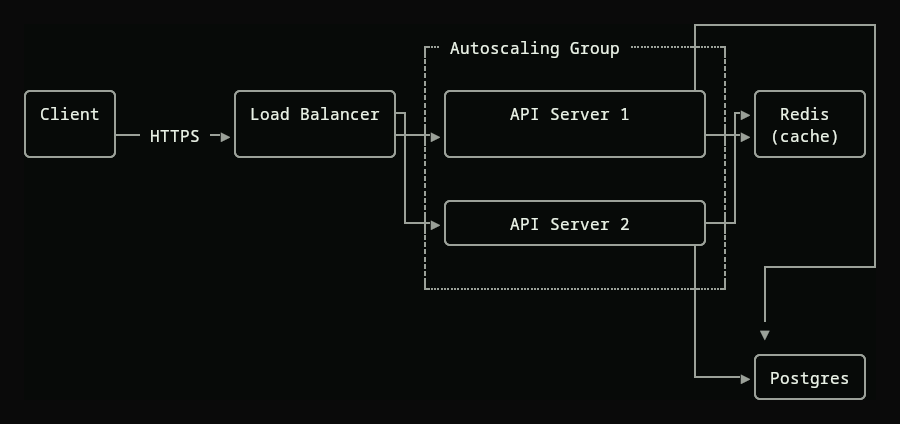

cortex · render mod
DRAWER
A ```dot fence in a Claude Code reply becomes a drawing. In place, while the reply is still streaming. One binary, nothing else running.
the entities are nice beyond the wall
cortex · render mod
A ```dot fence in a Claude Code reply becomes a drawing. In place, while the reply is still streaming. One binary, nothing else running.
a live session. the model writes DOT, you see the picture.
One Go binary, installed as a Claude Code plugin. It hooks the reply display. When a ```dot fence arrives, it lays the graph out with graphviz and paints it into the terminal where the fence sits. Graphviz, the type and the painting are all inside the binary. Nothing else to install.
drawer -doctor says what this terminal gets and why.
box drawing, where a terminal can't show pictures.
/plugin marketplace add sureffi/drawer /plugin install drawer@drawer
Then ask for a graph. Linux and macOS.
Three environment variables, set for claude in settings.json or the shell.
DRAWER_RENDER forces a drawing: auto, pixels or cells.DRAWER_THEME names a theme file.DRAWER_TEE records every payload the hook receives, for drawer -deltas to replay.nervous · neural link
The Claude Agent SDK for .NET. Drives the claude binary over stream-json, on the account that binary is logged into. No API key.
One namespace, Claude.Agent. A client, a live session, and a second client over the sessions the binary keeps on disk. Options for how the binary is reached and for what one call asks of it. Hooks and a permission callback as delegates. In-process MCP tools. Typed models built off the wire, with a factory for your own tests. Shaped after the Azure SDK design guidelines for .NET.
Not on nuget. dotnet pack at the root gives you the package for a folder feed, or reference the project.
<PackageReference Include="Claude.Agent" Version="1.0.0" /> <PackageReference Include="Microsoft.Extensions.Hosting" Version="10.0.12" />
builder.Services.AddClaudeAgentClient(o => o.Defaults.Model = "haiku");
Needs .NET and a claude on PATH that's logged in.
sensory · attention rig
Real-time crypto attention terminal. Event-driven .NET 8 microservices on AWS — SNS/SQS/ECS — LLM tweet classification, Solana on-chain verification, tiered SignalR alerts, React 19 front. Ran in production, 2025. Walked away over values. Would again.
A terminal that watches attention move through crypto twitter and turns it into ranked, timed signal. Event-driven .NET 8 microservices on AWS, wired with SNS, SQS and ECS. Tweets are classified by an LLM, tokens are verified on-chain on Solana, alerts go out in tiers over SignalR to a React 19 front.
handheld · cyberdeck
A hacking terminal for the Anbernic RG35XX-H. 26 tool modules, 5 more behind the Konami code, a ghost AI that whispers, procedurally synthesized audio — zero external files. Gamepad-only, 640×480, pygame state machine, builds to .muxapp. Built because it should exist.
A terminal for a handheld with no keyboard. Everything is driven from the pad. The whole thing is one pygame state machine, packaged as a .muxapp for muOS.
legacy · first chrome
Two GTA V mod menus in Lua. Motion at 14. Curse at 16 — a from-scratch immediate-mode UI framework inside a mod menu. It was always like this.
The first chrome. Two mod menus for FiveM, in Lua. Motion came first, at fourteen. Curse two years later, and by then the menu needed its own UI framework, so it got one, immediate-mode, written from nothing inside the menu itself.